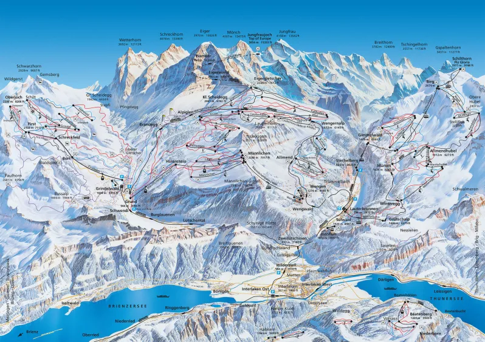
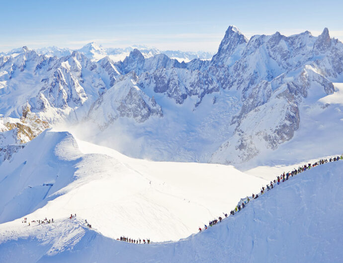
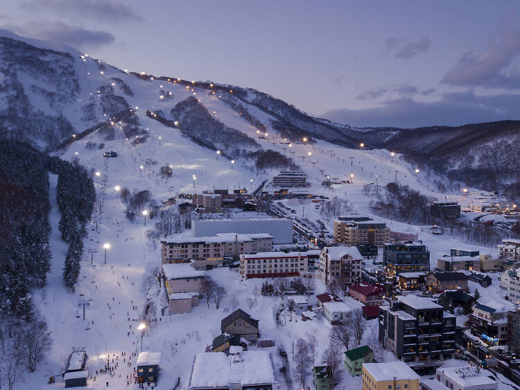
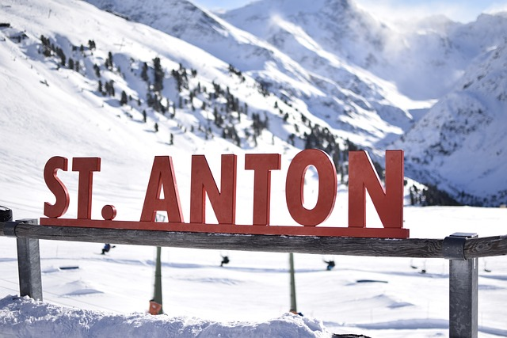
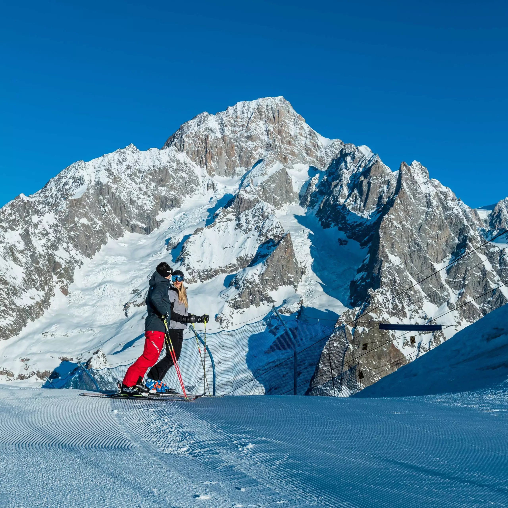

Selv om Norge byr på helt ville ski (og afterski) opplevelser, finnes det mange stder man burde sjekke ut. Først pg fremst er det en verdenskjent fjellkjede som går under navnene Alpene. Drar man dit vil man kunne oppleve narur og skiforhold som overgår det aller meste. Det finnes både kjente steder som Chamonix, eller små perler av landbyer som gemmer seg i de store fjellene. Folkene og skimuligjhetene der er ulikt alt annet. Dersom man bryr seg om ski og opplevelser er en tur til Alpene man burde investere i. I tilegg finnes det faktisk skimuligheter verden over. alt fra Amerika til Asia, du ser kanskje at Japan er satt opp på listen over. Enkelte stder der omtales som de beste skiområdene i verden! Vil du sjekke ut skimulighetene i Norge, trykk her.
Alpene er fjellkjeden som inneholder Europas høyeste fjell og skiperler på skiperler. Man kan faktisk stå en hel dag på ski uten å stå samme løype to ganger! Enkelte steder varer skisesongen helt frem til mai. De beste stedene er blant annet St Anton eller Chamonix som du kan lese mere om. Alpene innholder fjell fra Frankrike, Sveits, Tyskland, Italia i tillegg til fire andre land. De nevnte er de mest kjente. Alpene er virkelig et sted alle burde opppleve kun for opplevlsen av mgivelsene, de helt ville ski mulightene og den rå afterskien!
Chamonix ligger som nevnt i Alpene og tilhører Frankrike. Dette er en skidestinasjon alle proffene vi innom. Dette er fordi Chamonix har de lengste bakkene og er nok det mest kjente stedet i hele alpene for offpist mulighetene. Det er ski for alle ferdighetsnivåer, fra det mest avanserte til de som kun vil prøve seg litt utenfor løypa. Uavhengod er Chamonix et sted det er verdt å besøke!
Japan er nok ikke den mest omtalte skidestinasjonen, til tross for dette virkelig verdt å nevne. Her finnr du ski terreng i verdensklasse! Det ulike klimaet med unikt landskap og varmekilder gjør at man får de beste stedene ås tå på ski, i tillegg til områder med pudder med høy kvalitet. Offpist og løssnø mulighetene er upåklagelige og uendelige!
St Anton er også et av de mest kjente stedene i Alpene. Tyrolebyen tilhører Østerrike og har lenge vært mange sitt favoritt sted. Det er ikke så rart for området er nok et av de mest snørike stedene i Alpene. Den lengste nedkjøringen er hele 10 km lang. St Anton er nok et sted for mer erfarne skikjørere. Ønsker du offpist kjøing uyenom det vanlige må du stå i Stuben skogen som flere ganger har vært utnevnt til verdens beste!
Courmayuer er snøsikkert og passer for skikjørere som kjører på forskjellig nivåer. For dem som liker det veldig avansert finnes det mange bakker og gode utenforkjøringsmuligheter!Courmayuer ligger på den italienske siden av Mont Blanc og er et perfekt reisemål. Når det kommer til skogskjøring byr Courmayuer på de beste stedene i trolig hele Europa.
